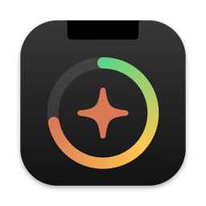

Plan limits
How much of your 5-hour session and weekly limit you've used, including Opus and Sonnet, with a countdown to the reset. Same data as /usage.

ClaudeNotch for macOS
Your plan limits, this week's tokens and the model you use most. And when Claude Code is done, the notch tells you.
No windows, no Dock icon. Just what you need, where you already look.
How much of your 5-hour session and weekly limit you've used, including Opus and Sonnet, with a countdown to the reset. Same data as /usage.
Tokens, output and replies for today and this week, plus each model's share: see at a glance whether you're mostly on Opus or Sonnet.
When Claude Code finishes a task, the notch opens and shows the project, session title and duration. With several sessions running, you know right away which one is waiting for you.
The token is read from your Keychain and sent only to Anthropic. Your stats stay on your Mac.
On Macs without a notch or on external displays, it shows up as a pill in the middle of the menu bar.
Native Swift and SwiftUI, zero dependencies. Reads logs incrementally and refreshes limits at most every 3 minutes.
How many tokens you've used since your weekly limit reset, and with which model.
Built from source with a single script, straight into Applications.
Builds, signs and launches the app.
xcode-select --installgit pull, then ./build.sh --install againFrom the same endpoint Claude Code's /usage command uses, with the token Claude Code stores in your Keychain. The token is re-read on every request, so it stays valid as long as Claude Code keeps refreshing it.
Partly. Plan limits only exist for Pro and Max accounts, so with an API key you'll only see token stats and session-finished alerts.
When Claude Code finishes a turn and is waiting for your reply. Turns shorter than 15 seconds are skipped, since you were probably already watching. You can turn alerts off with the bell in the panel.
Every reply in Claude Code's logs records the model that generated it and the tokens it used. ClaudeNotch adds up the week's tokens per model (subagents included) and shows each share, highlighting the most used.
Barely: at most one request every 3 minutes. If the endpoint pushes back with a rate limit, the app waits longer and longer before retrying (up to 30 minutes).
Turn off Login, quit the app with the power button in the panel and delete /Applications/ClaudeNotch.app.